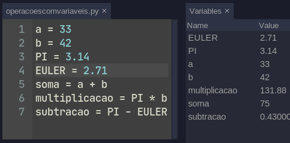
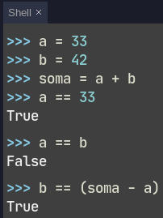
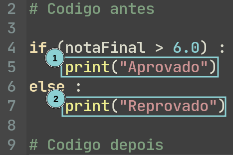

Acabamos de ver como criar variáveis no python, e juntando com os Operadores Matemáticos, conseguimos fazer algumas contas e salvar essas contas nas mesmas variáveis ou outras variáveis.

Uma outra ação bastante comum que faremos em nossa jornada será a de comparação entre diversos “objetos” que encontraremos ao longo de nossos códigos, e para isso utilizaremos os operadores de comparação.
Quando usamos esses operadores, nos será devolvida a informação se aquela expressão é verdadeira(True) ou falsa(False)
O primeiro que veremos é o comparador de igualdade. Mas pense no que você aprendeu até agora!
O que o código abaixo faz?
variavel1 = 300
Se você respondeu alguma coisa no formado de: Define variável como 300, Atribui 300 para a variável ou salva 300 na memória da variável, parabéns! Você está prestando atenção!
Mas… Se utilizamos o sinal de igual para atribuição, como que é o operador de igualdade? 🤔
Para isso, dobramos o sinal de igual, e o operador de igualdade então fica ==

Temos diversos outros operadores de comparação, para diferentes situações que precisaremos enfrentar.
| Nome | Operador |
|---|---|
| Igual a | == |
| Maior que | > |
| Maior ou igual a | >= |
| Menor que | < |
| Menor ou igual a | <= |
| Diferente de | != |
Agora que aprendemos a fazer comparações, podemos utilizá-las para tomar decisões em nosso código.
Para isso utilizaremos os operadores de comparação em conjunto com as estruturas condicionais.
Antes de ver em código, vamos pensar em um exemplo, imagine que para que um aluno seja aprovado em uma matéria, ele precisa de uma nota acima de 6.0. Podemos refrasear isso da seguinte forma:
Se a nota final do aluno for maior que 6.0 ele estará aprovado, caso contrário ele estará reprovado.
Se salvarmos a nota do aluno em uma variável notaFinal por exemplo podemos,
utilizando o que acabamos de aprender reescrever assim:
Se notaFinal > 6.0 aluno aprovado,
caso contrário, reprovado
Na programação temos uma estrutura que nos permite fazer essas decisões que é o if..else, veja como ficaria em um código o exemplo:
if (notaFinal > 6.0) :
print("Aprovado")
else:
print("Reprovado")
A forma genérica do if..else fica assim:
if (condicao) :
# Código se condicao for verdadeira
else :
# Código se condicao for falsa
condicao no código acima, SEMPRE vai ser uma expressão que retorne
verdadeiro(True) ou falso(False), como nas expressões com os operadores de
comparação que acabamos de ver.
A segunda parte, depois do else é opcional e nem sempre iremos utilizá-la.
Para melhor entender o funcionamento da ramificação de código, precisamos pensar em “blocos de código”

No exemplo acima temos, o programa principal, o bloco 1 e o bloco 2. –
Lembra que no pythons os espaços em branco no começo da linha tem significado?
Chamamos isso de indentação, e eles definem esses blocos.
Como que o computador executa esse código?
Ele irá intepretar a linha 4, se a variavel notaFinal for maior que 6.0 então
notaFinal > 6.0, será verdadeiro(True), então será executado o bloco 1.
Mas, se notaFinal, não for maior que 6.0, então notaFinal > 6.0 será
falso(False), e então a execução irá pular para a linha 6. Como é uma expressão
else, então será execudado o código do bloco 2, e depois seguindo o script
if (horaDoDia < 18):
print("Bom Dia")
else:
print("Boa Noite")
if(numero % 2): #Lembra como resto da função funciona?
print("Numero par")
else:
print("Numero impar")
Muita vezes, apenas uma condição não é suficiente, a precisamos verificar diversas condições, para casos diferentes.
Vamos pensar em um restaurante que sirva o café da manhâ, almoço, e janta, e tenha cardápios diferentes, podemos fazer o seguinte código:
if (horaDoDia < 11) :
print("Cardápio café")
elif (horaDoDia < 16) :
print("Cardápio almoço")
else:
print("Cardápio jantar")
“Traduzido” esse código para portugues:
se a horaDoDia for menor que 11 horas, será cardápio de café da manha,
mas se a hora do dia for maior que 11 horas, e menor que 16 horas, o cardápio será de almoço,
e por fim, se a hora do dia for maior que 16 horas, o cardápio será de jantar.
o uso do elif é bastante parecido com o do if, com a diferença que ele “encadeia” as verificações.
E se a primeira condição for verdadeira as outras nem são testadas.